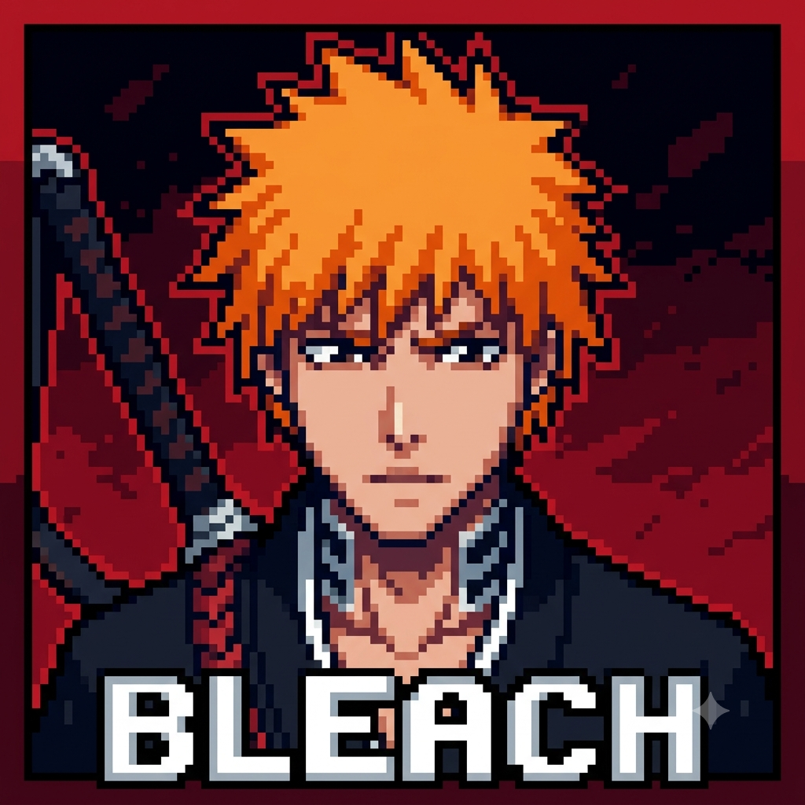

Introdução
Por: Gustavo Correia
Olá! Bem vindos a minha página de Bleach, eu sou o Dr.Urahara e aqui vou falar da história e curiosidades sobre os personagens dessa obra.
Vou colocar curiosidades sobre personagens de Bleach.

Por: Gustavo Correia
Olá! Bem vindos a minha página de Bleach, eu sou o Dr.Urahara e aqui vou falar da história e curiosidades sobre os personagens dessa obra.